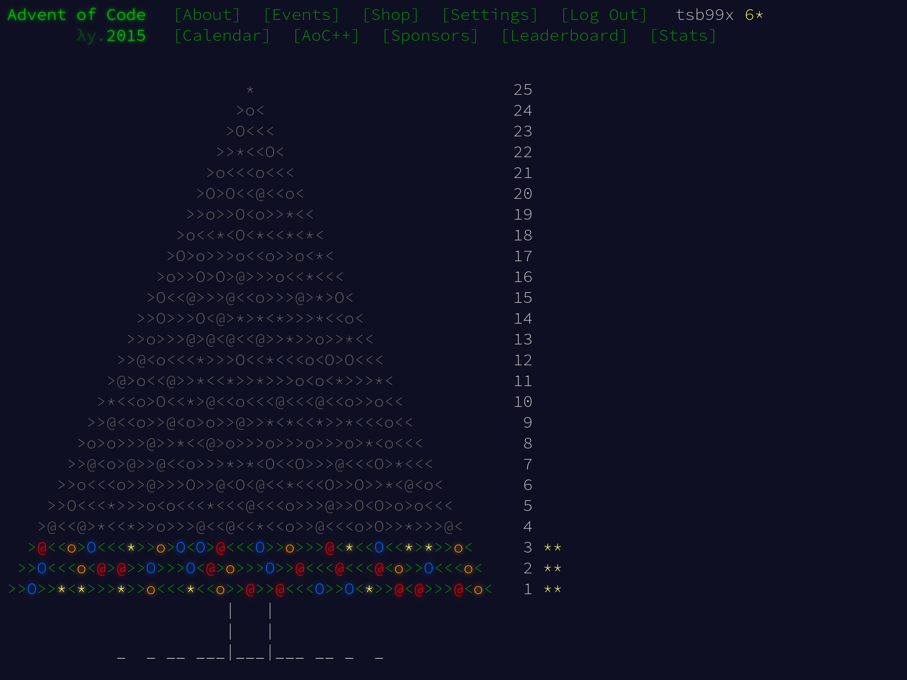

Advent of Code 2015, день 3

Следующая задача из Advent of Code 2015. Сегодня задача третьего дня. Первым делом разбираем условия. Вольный перевод от меня следует далее.
Задача
Санта доставляет подарки на бесконечной двумерной сетке из домов.
Он начинает с доставки подарка на его стартовой позиции. Затем эльф с Северного полюса связывается с Сантой по радио и говорит, куда двигаться дальше. Команды всегда означают следующий дом на север (^), юг (v), восток (>) или запад (<). После каждого движения Санта доставляет подарок в дом на его новой позиции.
Эльф на Северном полюсе выпил много эгг-нога, поэтому его указания не совсем точные. Санта посетит некоторые дома больше, чем один раз. Как много домов будет иметь хотя бы один подарок?
Примеры:
- > доставит подарок в 2 дома: один на стартовой точке и один на востоке.
- ^>v< доставит подарки в 4 дома, очерчивая квадрат, включая двойное посещение дома на стартовой/конечной точках.
- ^v^v^v^v^v доставит много подарков очень везучим ребятам в 2-ух домах.
Решение на Си
Эта задача прямо говорит о передвижениях, повторениях и поиске уникальных координат. Основной элемент задачи – двумерная сетка из домов и модель перемещения по ним. Сфокусируемся на понятии позиции как точки в двумерном пространстве и обработки команд для перемещения.
struct point_2d {
int x;
int y;
};
static void move(struct point_2d *pos, char ch)
{
switch (ch) {
case '>':
pos->x++;
return;
case '<':
pos->x--;
return;
case '^':
pos->y++;
return;
case 'v':
pos->y--;
return;
default:
return;
}
}
Структура point_2d представляет ту самую точку. Процедура move позволит применить поступившую “инструкцию” и обновить координаты. Неизвестные команды игнорируем. Достаточно прямолинейно.
Теперь к вопросу представления сетки домов. Решение в лоб – взять двумерный массив и отмечать на нём перемещения. После обработки всех команд пройтись по этой сетке и посчитать посещённые Сантой точки.
Это решение, пусть и простое, имеет один недостаток – тяжело спрогнозировать объём реально используемой памяти для работы и понять как корректировать размерность сетки. Пример: Санта пошёл в одну сторону и идёт только в этом направлении. Когда он упрётся в границы поля, что дальше делать? Подобное решение требует дополнительного учёта множества граничных ситуаций, которые не описали в исходной постановке.
Вернёмся к условиям: задача говорит только о поиске уникальных координат. У нас уже имеется структура point_2d. Если сохранять point_2d в некий аналог математического множества (Set), то мы сможем значительно упростить работу!
Самая большой недостаток этого подхода – отсутствие понятия Set в Си. Давайте реализуем самый наивный вариант того, как можно добавлять элементы в Set.
#define SET_SIZE 4096
static int set_add(int set_count, struct point_2d set[], struct point_2d elem)
{
for (int i = 0; i < set_count; i++) {
if ((set[i].x == elem.x) && (set[i].y == elem.y)) {
return set_count;
}
}
if (set_count >= SET_SIZE) {
(void)fputs("Failed to set_add, capacity reached\n", stderr);
exit(EXIT_FAILURE);
}
set[set_count] = elem;
return set_count + 1;
}
Это имплементация, построенная вокруг простого массива. При добавлении в set элемента elem, мы первым делом перебираем весь массив в попытке найти такой же элемент. Если получилось найти, то возвращаем исходное количество элементов множества, ведь мы ничего не добавили.
Если такого элемента нет, то мы проверяем, есть ли место в массиве для новых элементов, set_count >= SET_SIZE. Если места нет – просто “падаем” с ошибкой. В ином случае записываем новый элемент на следующую доступную позицию в set и возвращаем новое количество элементов set_count + 1.
Эту реализацию можно значительно улучшать: сделать динамическую аллокацию, деаллокацию и реаллокацию памяти; сделать структуру set_point_2d, куда вынести set_count, и где сохранить set_capacity… Вариантов много, но это более многословная реализация, не требуемая для этой задачи.
Самое главное, чего удалось добиться – понятного увеличения количества используемой памяти. Set на основе массива – одномерная структура, тут нет проблем с пониманием как увеличить выделенную память (достаточно поменять значение SET_SIZE).
Теперь перейдём к основной функции how_many_houses.
static int how_many_houses(FILE *stream)
{
int ch = 0;
struct point_2d pos = {0};
struct point_2d set[SET_SIZE] = {0};
int set_count = set_add(0, set, pos);
while ((ch = fgetc(stream)) != EOF) {
move(&pos, (char)ch);
set_count = set_add(set_count, set, pos);
}
if (!feof(stream)) {
perror("Failed to fgetc");
exit(EXIT_FAILURE);
}
return set_count;
}
Это – связующее звено между предыдущими функциями. Как и в предыдущих задачах, принимаем ввод в виде стрима из FILE*. С самого начала инициализируем set и добавляем в него исходную позицию Санты. На каждую инструкцию в ch изменяем позицию pos и добавляем значение обновлённой позиции в set. Для получения ответа на задачу просто возвращаем set_count – количество элементов в set.
Завершает решение типичная функция main.
int main(int argc, char *argv[])
{
int houses = 0;
if (argc > 1) {
(void)fprintf(stderr,
"No arguments are accepted!\n"
"Use IO redirection: %s < input\n",
argv[0]);
return EXIT_FAILURE;
}
houses = how_many_houses(stdin);
(void)printf("%d\n", houses);
return EXIT_SUCCESS;
}
Здесь ничего нового относительно предыдущих решений нет.
Запускаем тесты:
$ ./test_i.sh
Test > => 2 PASSED
Test ^>v< => 4 PASSED
Test ^v^v^v^v^v => 2 PASSED
All tests are completed and passed!
Answer for input: 2565
Этот ответ устраивает Advent of Code.
Вторая часть
В следующем году, чтобы ускорить процесс, Санта создаёт робо-версию себя, Робо-Санту.
Санта и Робо-Санта начинают на той же локации. Они доставляют два подарка в один и тот же дом, а затем поочерёдно двигаются по инструкциям от эльфа, который читает те же указания, что и в предыдущем году, попивая эгг-ног.
Как много домов будут иметь хотя бы один подарок в этом году?
Примеры:
- ^v доставит подарки в 3 дома, потому что Санта отправляется на север, а затем Робо-Санта идёт на юг.
- ^>v< теперь доставит подарки в 3 дома, а Санта и Робо-Санта придут в ту же точку, откуда начинали.
- ^v^v^v^v^v теперь доставляет подарки в 11 домов, ведь Санта идёт в одну сторону, а Робо-Санта идёт в другую.
Изменения в исходном решении
Постановка практически не изменилась, за исключением появления новой позиции у Робо-Санты и поочерёдной обработки указаний от эльфа.
Посмотрим на diff -u part_{i,ii}.c:
--- part_i.c 2025-03-12 18:20:38.991916889 +0300
+++ part_ii.c 2025-03-12 18:20:45.428005634 +0300
@@ -49,13 +49,16 @@
static int how_many_houses(FILE *stream)
{
int ch = 0;
- struct point_2d pos = {0};
+ struct point_2d santa_pos = {0};
+ struct point_2d robo_pos = {0};
+ struct point_2d *current = &santa_pos;
struct point_2d set[SET_SIZE] = {0};
- int set_count = set_add(0, set, pos);
+ int set_count = set_add(0, set, *current);
while ((ch = fgetc(stream)) != EOF) {
- move(&pos, (char)ch);
- set_count = set_add(set_count, set, pos);
+ move(current, (char)ch);
+ set_count = set_add(set_count, set, *current);
+ current = (current == &santa_pos) ? &robo_pos : &santa_pos;
}
if (!feof(stream)) {
Теперь pos разделился на santa_pos и robo_pos. Появился указатель current, который определяет какую именно позицию мы будем изменять. После каждой команды current переключается с Санты на Робо-Санту или наоборот.
Прогоняем тесты:
$ ./test_ii.sh
Test ^v => 3 PASSED
Test ^>v< => 3 PASSED
Test ^v^v^v^v^v => 11 PASSED
All tests are completed and passed!
Answer for input: 2639
И этот ответ подошёл, отлично! Задача решена.
Решения задачек можно найти в репозитории на GitHub.
Журнал изменений
2 января 2026 г.: перенёс исходный код на GitHub.